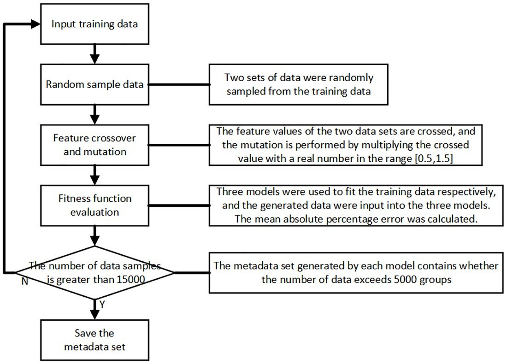
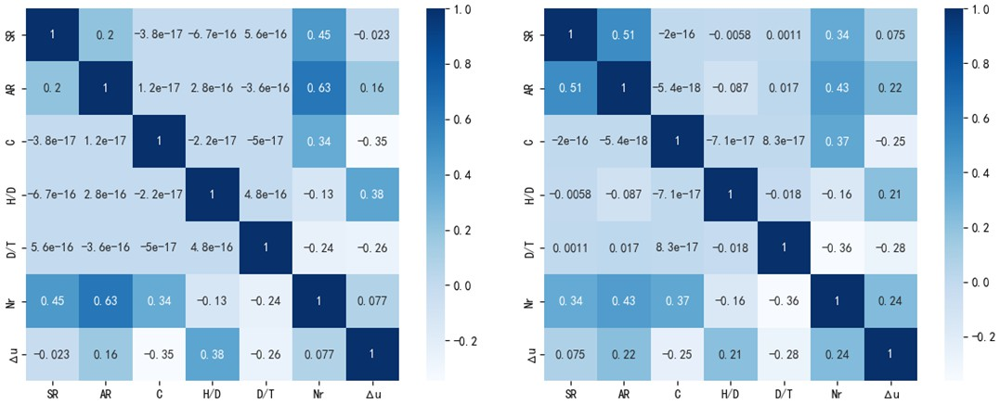
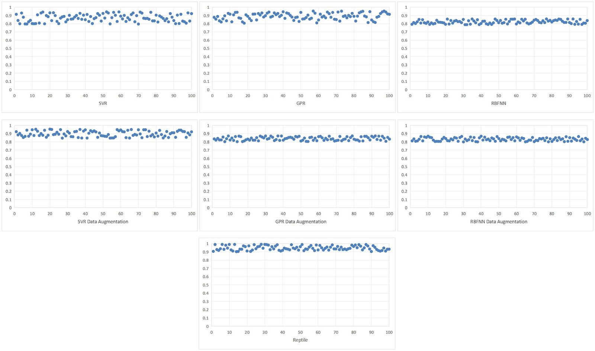
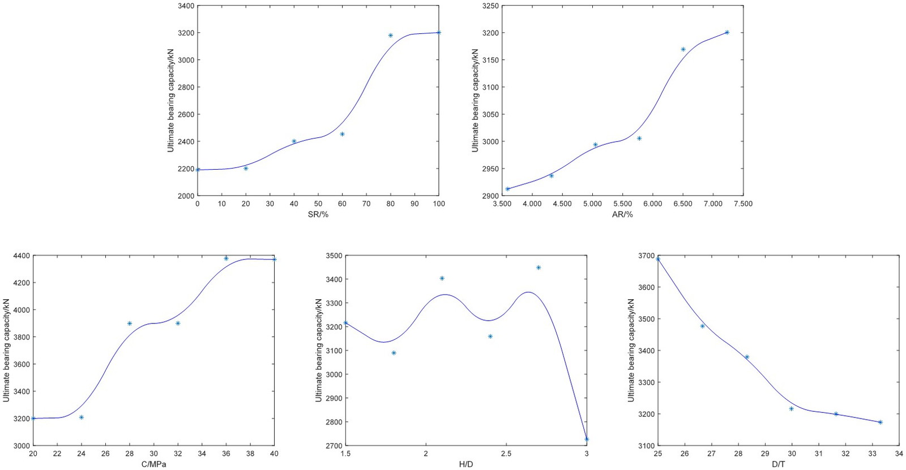
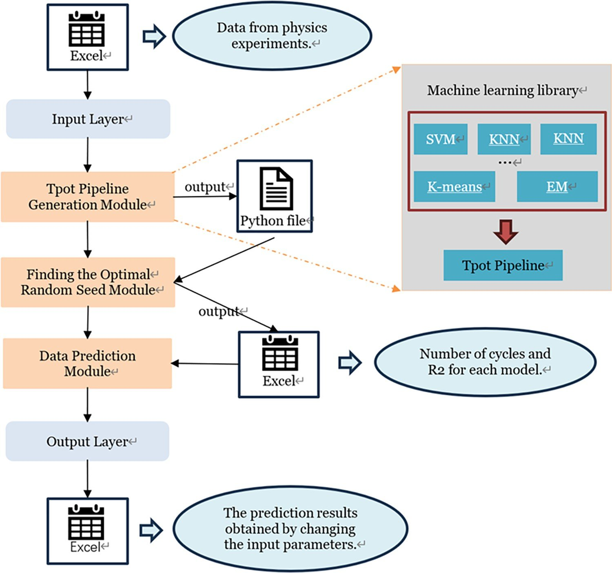
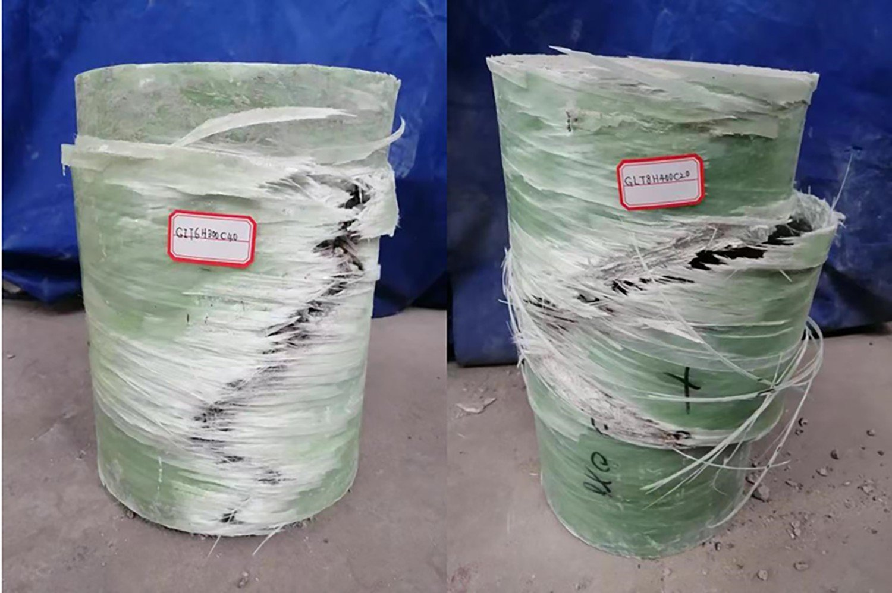

With only 72 destructive tests, can a model predict how a composite column will fail—and tell you how to design a better one?
只有 72 组破坏性试验数据，模型能否预测复合材料柱的承载性能，并反过来指导设计？
Glass-fibre-reinforced-polymer tubes filled with concrete make light, corrosion-resistant columns for bridges, marine and underground structures. Predicting their ultimate bearing capacity and ultimate displacement from design parameters would let engineers optimise a section before casting it. But every data point is a destructive test, so the datasets are tiny—72 specimens here—while deep networks typically want thousands of samples.
玻璃纤维增强聚合物（GFRP）管内填混凝土，可以做成轻质、耐腐蚀的柱子，用于桥梁、海洋和地下结构。如果能从设计参数预测极限承载力和极限位移，工程师就能在浇筑前优化截面。但每个数据点都来自一次破坏性试验，数据集因此极小——这里只有 72 个试件——而深度网络通常需要成千上万个样本。
I worked the problem from two directions. The first paper asks whether a deep model can be made to work with 72 samples at all, by generating physically plausible virtual samples and meta-learning an initialisation. The second asks which off-the-shelf learners—including an AutoML search—model two families of GFRP columns best, and then turns the best models into design recommendations.
我从两个方向解决这个问题。第一篇论文问：能否通过生成物理上合理的虚拟样本并用元学习获得初始化，让深度模型在 72 个样本上也能工作？第二篇论文问：哪些现成的学习器——包括 AutoML 搜索——最适合建模两类 GFRP 柱？然后把最优模型变成设计建议。
Five inputs describe a column: the symmetry ratio of the embedded profile (I-section 100%, L-section 0%, C-section in between), its area ratio, concrete strength, height-to-diameter ratio and diameter-to-wall-thickness ratio. Two outputs: ultimate bearing capacity and ultimate displacement. 66 specimens train, 6 are held out—two of each section type—and every model is re-run 100 times with different random seeds so a lucky split cannot masquerade as a result.
五个输入描述一根柱子：内嵌型材的对称度（I 型 100%，L 型 0%，C 型介于两者之间）、面积比、混凝土强度、高径比、径厚比。两个输出：极限承载力与极限位移。66 个试件用于训练，6 个留出——每种截面各两个——每个模型用不同随机种子重复 100 次，避免一次幸运的划分冒充结果。
The augmentation treats each real sample as an individual and its parameters as chromosomes. Two training samples cross over, a mutation multiplies a parameter by a random factor in [0.5, 1.5], and the offspring survives only if three regressors trained on real data—SVR, GPR and RBFNN—agree it is plausible (fitness MAPE below 20%, tightened over generations). Seven generations produced about 15,000 virtual samples whose correlation structure matches the original data. Reptile, a first-order meta-learning algorithm, then pre-trains a five-layer fully connected network across tasks sampled from these meta-datasets, and the result is fine-tuned on the 66 real specimens.
增广把每个真实样本当作个体、参数当作染色体。两个训练样本交叉，变异则把某个参数乘以 [0.5, 1.5] 内的随机因子，只有当三个在真实数据上训练的回归器——SVR、GPR、RBFNN——都认为后代合理（适应度 MAPE 低于 20%，并逐代收紧）时才保留。七代演化产生了约 15,000 个虚拟样本，其相关性结构与原始数据一致。随后用一阶元学习算法 Reptile 在这些元数据集采样的任务上预训练一个五层全连接网络，再在 66 个真实试件上微调。




The second study benchmarks TPOT—a genetic-programming AutoML that searches feature selectors, transformers, regressors and their hyper-parameters and exports a Python pipeline—against SVM, MLP, Bagging and Random Forest on two column families: concrete-wound GFRP columns and concrete-filled GFRP columns (60 unreinforced plus 3 × 27 reinforced specimens). A modelling loop cycles the random split, logs R² and MAE per cycle and keeps the best seed.
第二项研究把 TPOT——一种基于遗传编程的 AutoML，搜索特征选择器、变换器、回归器及其超参数并导出 Python 流水线——与 SVM、MLP、Bagging、随机森林在两类柱上对比：混凝土缠绕 GFRP 柱与混凝土填充 GFRP 柱（60 个无加筋 + 3 × 27 个加筋试件）。建模循环轮换随机划分，逐轮记录 R² 与 MAE，保留最优种子。
For wound columns SVM was best (bearing capacity MAE 0.36%, R² 0.9998) with TPOT second; Bagging and Random Forest failed outright on displacement. For filled columns TPOT was best on average (MAE 0.76%, R² 0.996). Probing the best models gave two design recommendations: for a wound column an I-section with 40 MPa concrete, H/D = 1.5 and D/T = 25; for a filled column a C-section with 45.3 MPa concrete, H/D = 10 and D/T = 20, with the diameter-to-thickness ratio flagged as the governing failure index.
对缠绕柱，SVM 最优（承载力 MAE 0.36%，R² 0.9998），TPOT 次之；Bagging 与随机森林在位移上完全失效。对填充柱，TPOT 平均最优（MAE 0.76%，R² 0.996）。对最优模型做探测得到两条设计建议：缠绕柱采用 I 型截面、40 MPa 混凝土、H/D = 1.5、D/T = 25；填充柱采用 C 型截面、45.3 MPa 混凝土、H/D = 10、D/T = 20，并指出径厚比是主导破坏的指标。

